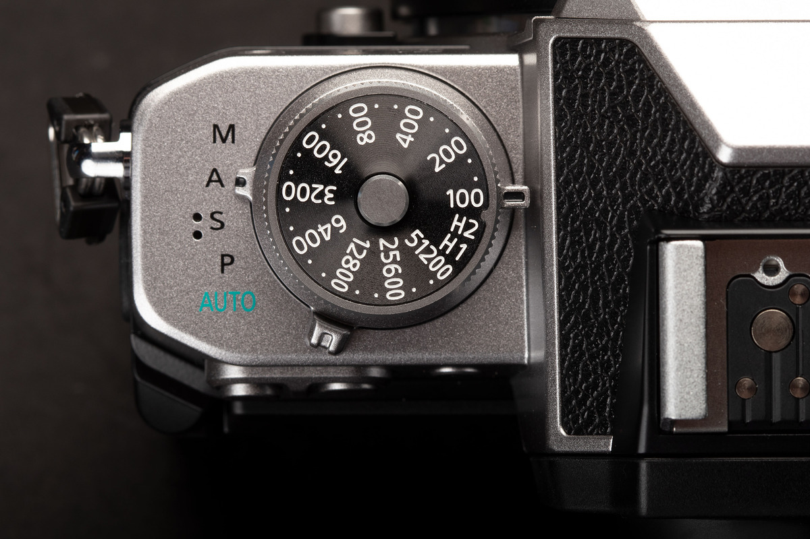
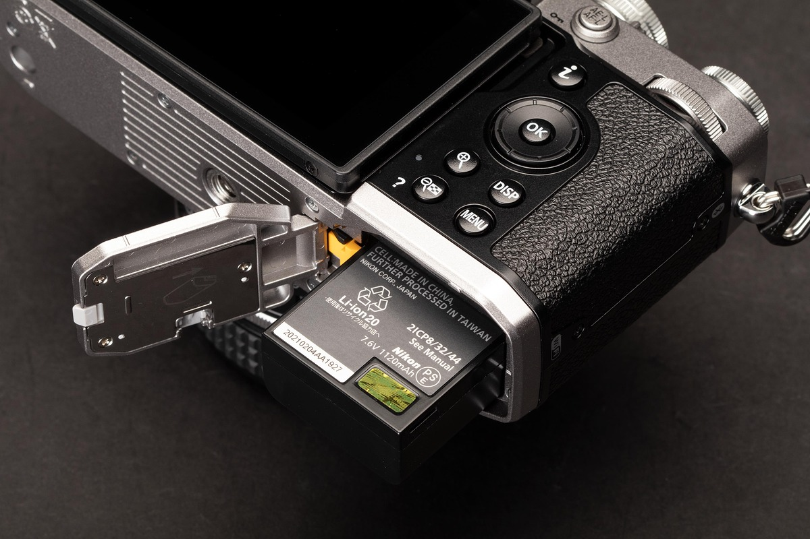
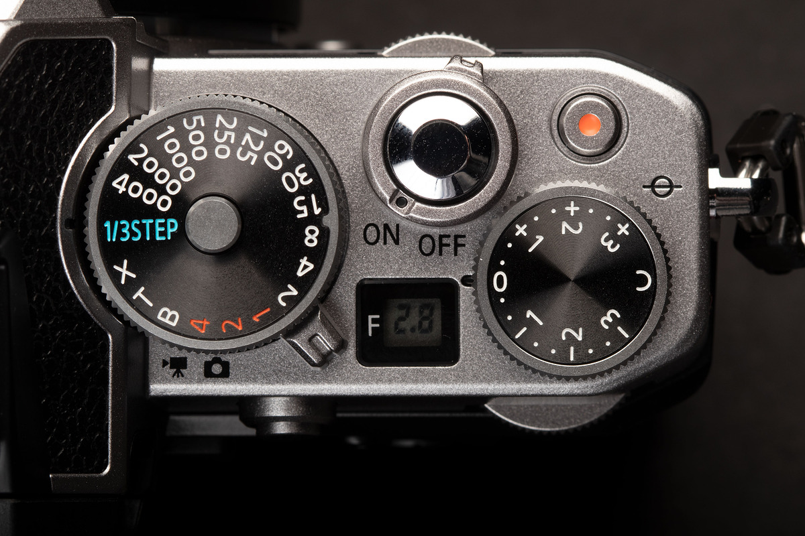
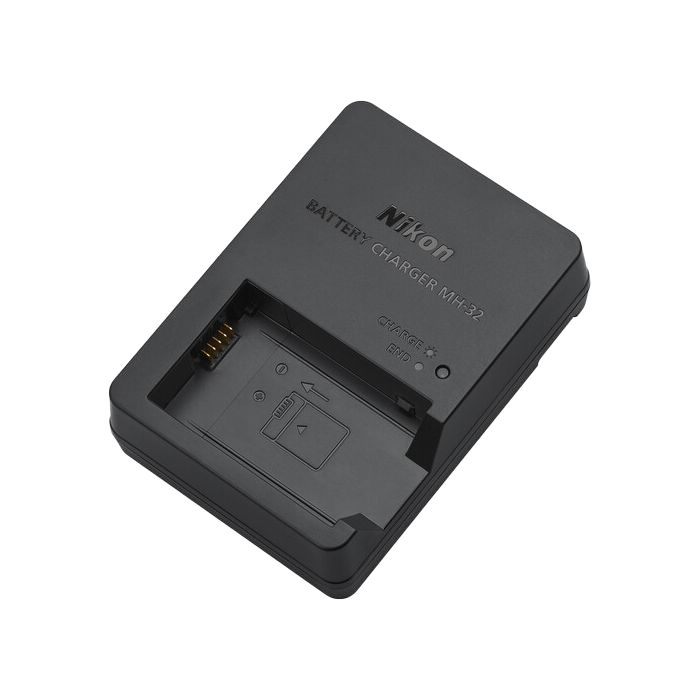
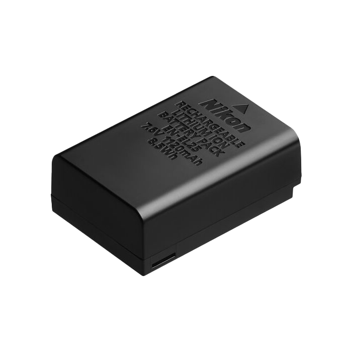
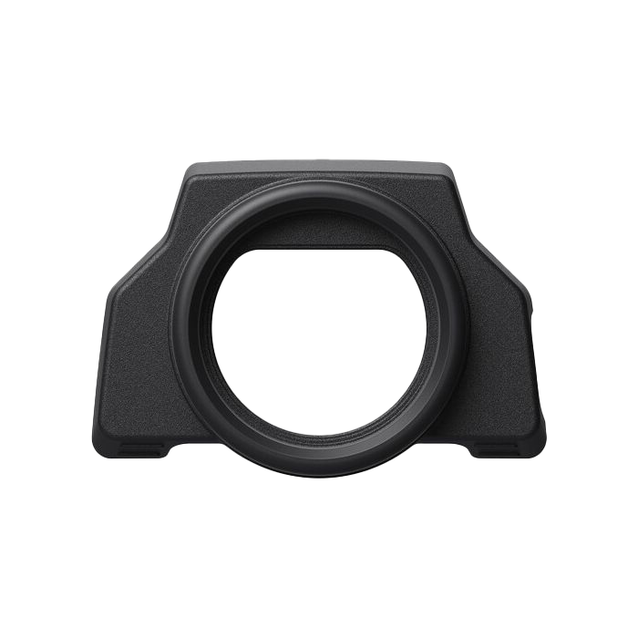
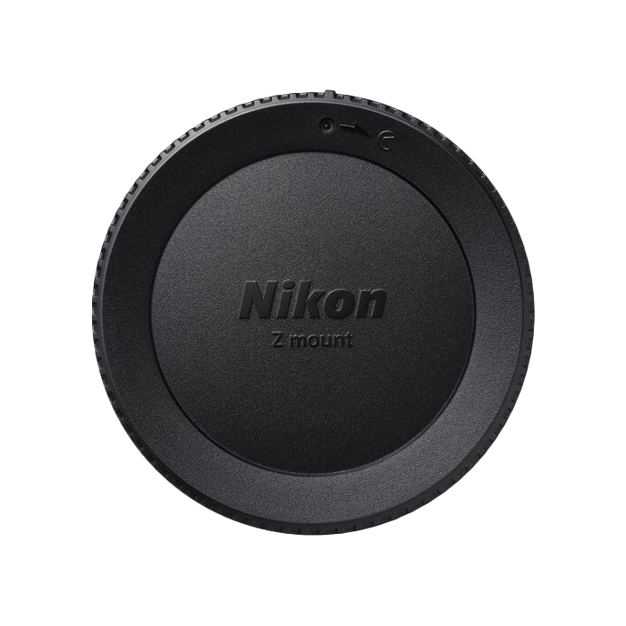
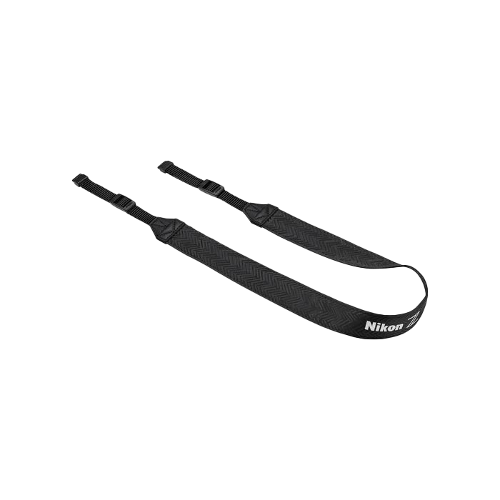

O Fotoaparatu
Nikon Zfc spaja klasični dizajn Nikonovih analognih fotoaparata s naprednom tehnologijom serije Z bez zrcala. Izrađen s preciznim mehaničkim brojčanicima za upravljanje i teksturiranim kućištem, ovaj model donosi poseban taktilni osjećaj pri svakom okidanju.
Bilo da snimate uličnu fotografiju, portrete ili kreirate multimedijski sadržaj za vloge, DX senzor i brz sustav autofokusa osigurat će besprijekornu oštrinu i bogate boje u svim uvjetima osvjetljenja.

Galerija detalja


Tehničke Karakteristike
Senzor
20.9 MP DX-Format CMOS
Procesor
EXPEED 6 pokretač slika
Video
4K UHD pri 30p bez izrezivanja
Zaslon
Zakretni dodirni LCD zaslon



Sadržaj Pakiranja
U originalnom tvorničkom pakiranju Nikon Zfc modela dolazi sve što vam je potrebno za trenutni početak snimanja. Uz samo kućište fotoaparata, unutar kutije nalazi se originalni punjač i robusna litij-ionska baterija, zaštitni poklopac kućišta i objektiva koji čuva senzor od prašine, te prepoznatljivi retro remen za nošenje oko vrata koji osigurava stabilnost i udobnost na terenu.




